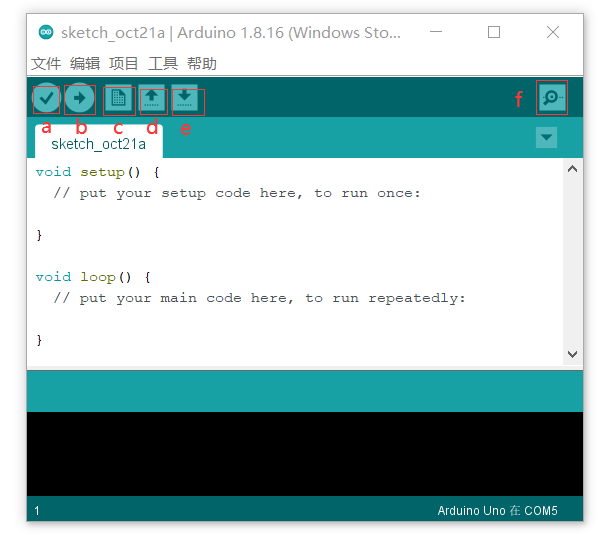
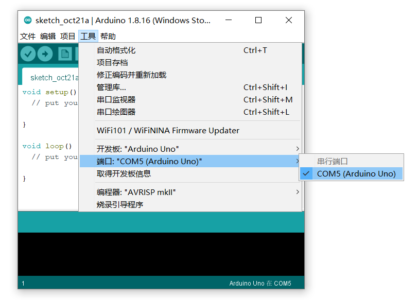
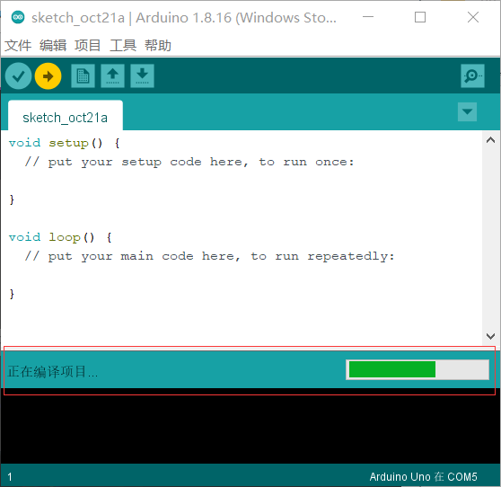

所需硬件
- Arduino开发板 X 1
- 200欧姆电阻 X 2
- 连接线 X n
- 面包板 X 1
- 开关 X 2
- 1588LED8*8点阵 X 1
示意图
电路图
矩阵的16个引脚连接到Arduino板的16个引脚，六个模拟引脚用作数字输入，通过200欧姆电阻将开关与arduino开发板相连，连接到引脚12和13的2个开关控制1588LED8*8点阵中点亮的LED进行“向上”/“向左”运动。
演示视频
arduino的使用
1.下载Arduino IDE
▷ 在Arduino官网（https://www.arduino.cc/en/software）下载最新版本的开源Arduino软件（IDE）

2.打开Arduino IDE软件
▷ 软件主要功能包括：
a-验证，检查是否存在编译错误
b-上传，将程序上传到Arduino开发板上
c-新建，新建示例文件
d-打开，直接打开示例文件之一
e-保存，保存文件
f-串口监视器，从开发板中接收串行数据并将其发送至该串口监视器中显示
a-验证，检查是否存在编译错误
b-上传，将程序上传到Arduino开发板上
c-新建，新建示例文件
d-打开，直接打开示例文件之一
e-保存，保存文件
f-串口监视器，从开发板中接收串行数据并将其发送至该串口监视器中显示
3.编译和运行
▷ 首先将Arduino开发板连接至电脑设备，在菜单栏中“工具-端口”中选择对应的端口
▷ 点击“a-验证”对程序进行编译，再点击“b-上传”，待下图中“正在编译项目”变为“上传成功”后成功运行程序
